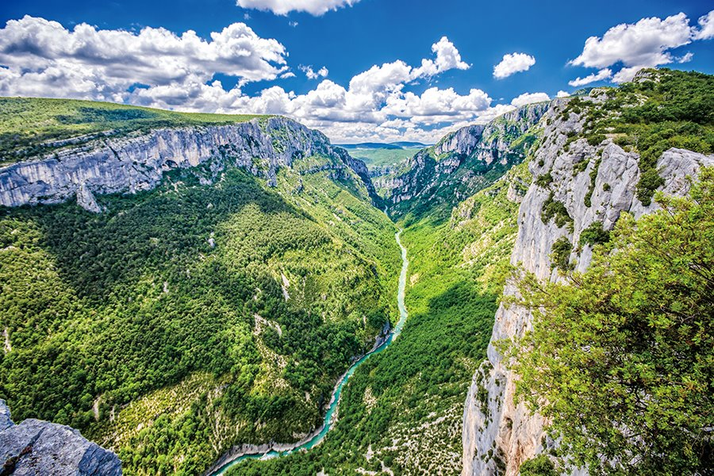
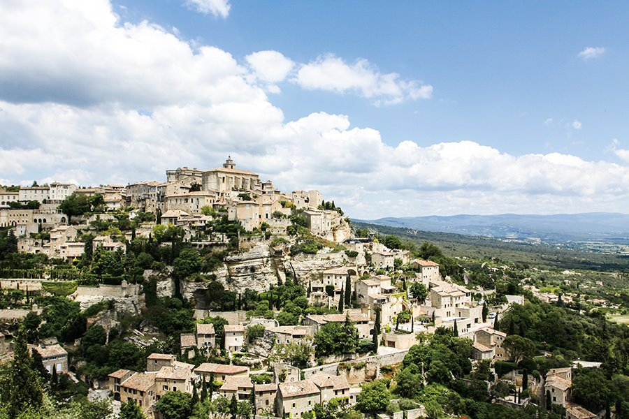
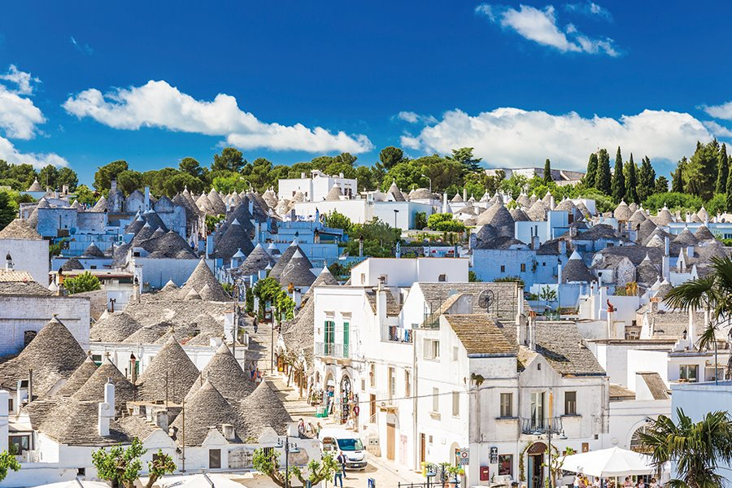

유럽의 '그랜드 캐니언'이라 불리는 베르동 협곡은 베르동강의 파란 물줄기가 협곡을 따라 무려 약 25km 흘러가는 유럽 최대 규모의 협곡이에요. 남프랑스의 마르세유와 니스에서 약 2시간 거리에 위치하고 있죠. 양쪽으로 길게 뻗은 절벽 사이로 흐르는 베르동 강물에는 석회암 성분이 녹아 있어 날씨와 유수량 등에 따라 물빛이 에메랄드 색, 코발트블루색, 옥색 등 다채롭게 변해 신비로워요.
향기로운 프랑스 여행을 꿈꾼다면, 고르드로 발걸음을 옮겨보세요. 고르드는 프로방스의 작은 중세 마을로 프랑스에서 가장 아름다운 마을 중 하나로 꼽히기도 했을 만큼 아름다워요. 또한 고르드에서 북쪽으로 5km 거리에는 라벤더 풍경의 아이콘이라 불리는 세낭크 수도원이 있어요. 보랏빛 라벤더가 넘실거리는 모습은 6월 중순에서 7월 중순이 피크!
트룰리(Trulli)라 불리는 이 이탈리아 전통 가옥의 모습은 유럽 어디에서도 볼 수 없는 알베로벨로만의 매력! 마치 스머프 마을을 연상케 하는데, 실제로 특유의 집 모양은 만화 스머프에 영감을 줬다고 해요. 어디든 셔터를 누르면 곧바로 그림이 되는 이곳은 마을 전체가 유네스코 세계문화유산! 크로아티아 두브로브니크 등을 오가는 크루즈의 기착지인 바리(Bari)에서 약 1시간 거리에 있어요.
